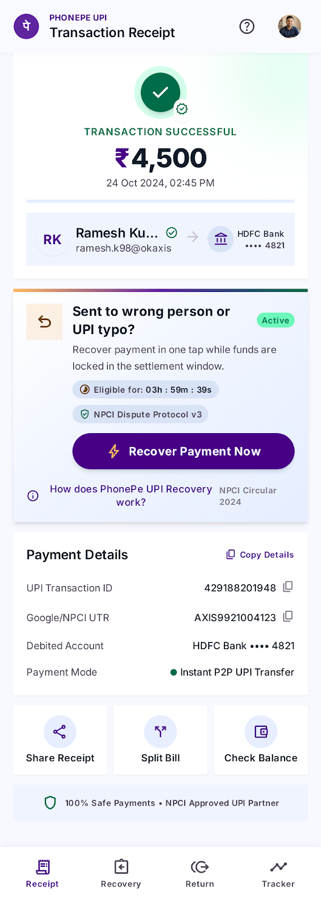
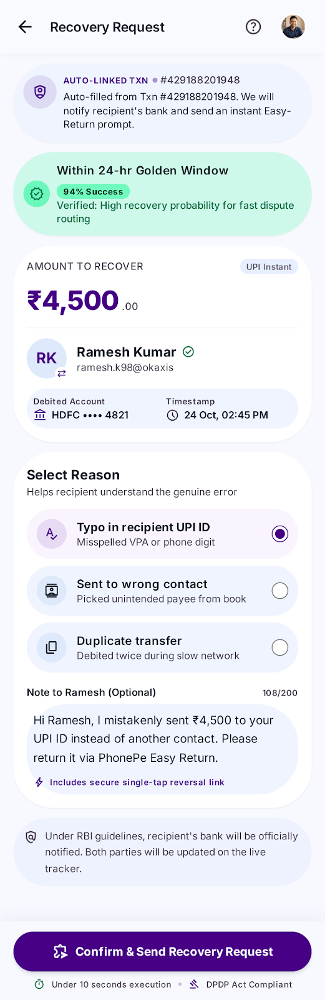
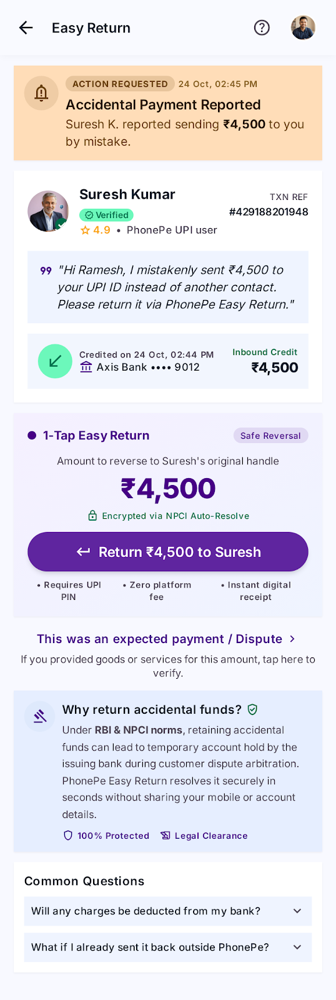
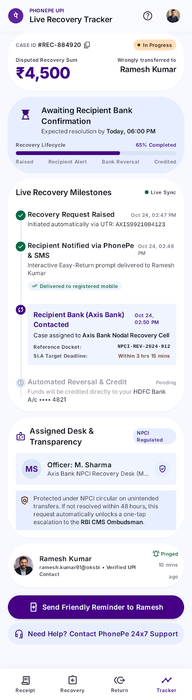

A product concept and portfolio case study focused on reducing friction in accidental money transfer recovery, improving trust, and giving users a faster path to resolution.


Transaction details are auto-filled and the request is submitted in a guided flow.
Open screen
Recipient gets a simple, low-friction return option to resolve the case quickly.
Open screen
Users can track the case, understand the next step, and see the current status.
Open screen